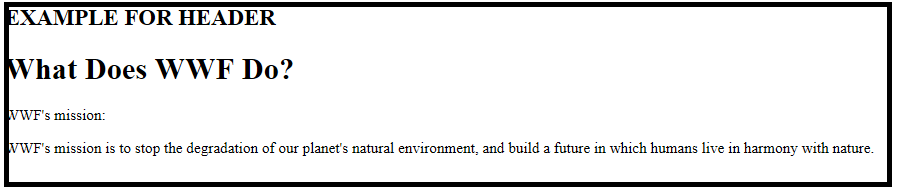
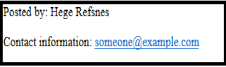
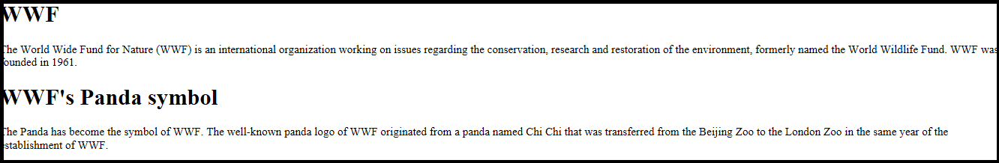
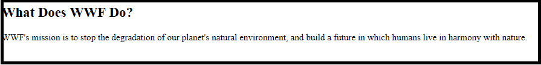
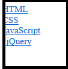
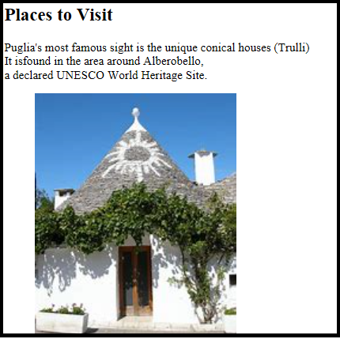

| tag | description |
|---|---|
| header | defines header for a document or section |
| footer | defines footer for a document or section |
| section | defines section in a document |
| details | defines additional details that the user can view or hide |
| article | defines article in a document |
| nav | defines navigation links |
| aside | defines content aside from the page content |
| figure | defines self contained content |
| meter | defines a scalar measurement within a range(a guage) |

HEADER
- The header element specifies a header for a document or section.
- The header element should be used as a container for introductory content.
- You can have several
elements in one document.
EXAMPLE FOR HEADER
<article><header>
<h1>What Does WWF Do?</h1>
<p>WWF's mission:</p>
</header>
<p>WWF's mission is to stop the degradation of our planet's natural environment, and build a future in which humans live in harmony with nature.</p>
</article>
OUTPUT
FOOTER
- The footer element specifies a footer for a document or section.
- A footer element should contain information about its containing element.
- A footer typically contains the author of the document, copyright information, links to terms of use, contact information, etc.
- You may have several footer elements in one document.
- A section is a thematic grouping of content, typically with a heading.
- A home page could normally be split into sections for introduction, content, and contact information.
- The article element specifies independent, self-contained content
- An article should make sense on its own, and it should be possible to read it independently from the rest of the web sitli>
- Examples of where an article element can be used:
- Forum post
- Blog post
- Newspaper article
- The nav element defines a set of navigation links.
- The purpose of a figure caption is to add a visual explanation to an image.
- An image and a caption can be grouped together in a figure element
- The img element defines the image, the figcaption element defines the caption.
EXAMPLE FOR FOOTER
<footer><p>Posted by: Hege Refsnes</p>
<p>Contact information: <a href="mailto:someone@example.com">
someone@example.com</a></p>
</footer>
OUTPUT
SECTION
EXAMPLE FOR SECTION
<h1>WWF</h1><p>The World Wide Fund for Nature (WWF) is an international organization working on issues regarding the conservation, research and restoration of the environment, formerly named the World Wildlife Fund. WWF was founded in 1961.</p>
<h1>WWF's Panda symbol</h1>
<p>The Panda has become the symbol of WWF. The well-known panda logo of WWF originated from a panda named Chi Chi that was transferred from the Beijing Zoo to the London Zoo in the same year of the establishment of WWF.</p>
OUTPUT
ARTICLE
EXAMPLE FOR ARTICLE
<article><h1>What Does WWF Do?</h1>
<p>WWF's mission is to stop the degradation of our planet's natural environment, and build a future in which humans live in harmony with nature.</p>
</article>
OUTPUT
NAV
EXAMPLE FOR NAV
<nav><a href="/html/">HTML</a><br>
<a href="/css/">CSS</a><br>
<a href="/js/">JavaScript</a><br>
<a href="/jquery/">jQuery</a>
</nav>
OUTPUT
FIGURE
EXAMPLE FOR FIGURE
<h2>Places to Visit</h2><p>Puglia's most famous sight is the unique conical houses (Trulli)<br>
It isfound in the area around Alberobello,<br>
a declared UNESCO World Heritage Site.</p>
<figure>
 <figcaption>Fig.1 - Trulli, Puglia, Italy.</figcaption>
<figcaption>Fig.1 - Trulli, Puglia, Italy.</figcaption></figure>
OUTPUT
